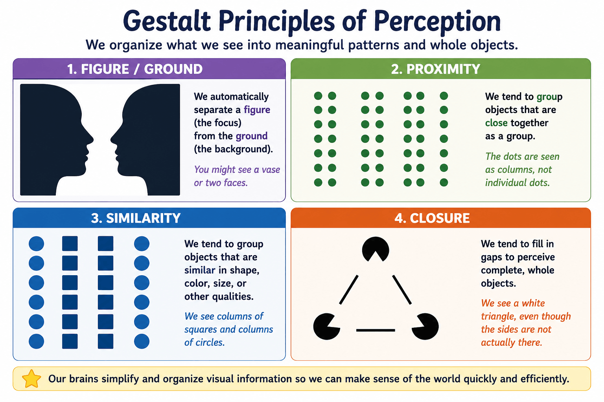
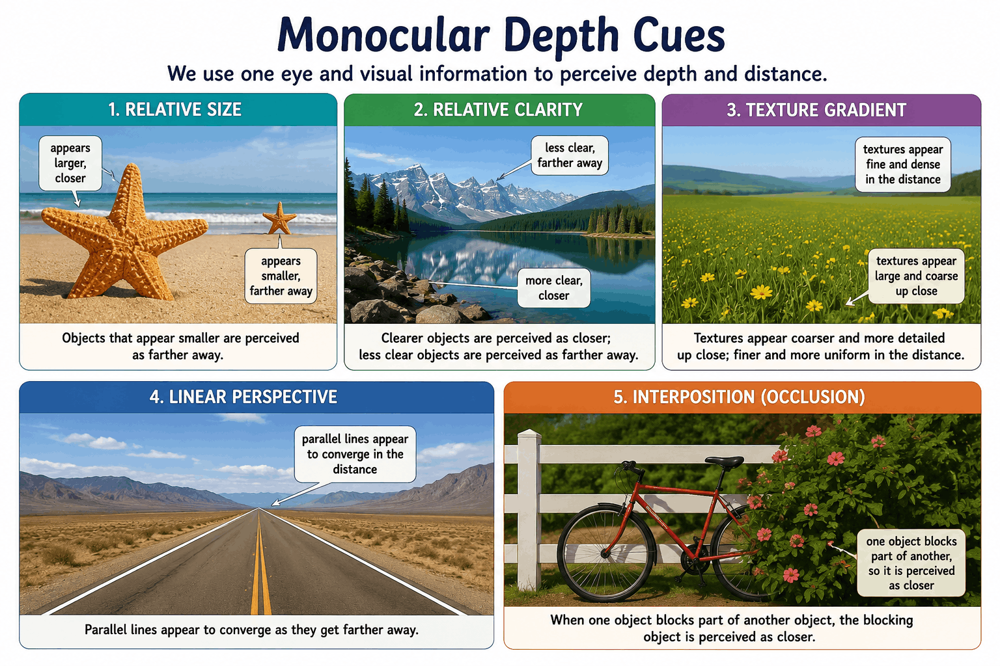

In Unit 1, we learned how our biological hardware collects raw sensory data from the environment. But sensing the world is only half the battle. Our brains must actively filter, organize, and interpret that data to create a meaningful reality—a process known as perception. Because perception relies heavily on our memories, expectations, and biases, the reality we experience isn't just a perfect video recording of the world; it is a mental construction heavily influenced by our own minds.
Imagine walking into a pitch-black room in a house you've never visited before. You have to blindly feel the edge of a table, the fabric of a couch, and the cold glass of a window, piecing those sensory clues together to figure out the layout of the room. This is bottom-up processing—starting with the raw, incoming sensory data and building up to a complete perception.
Now, imagine walking into your own bedroom in the dark. You don't need to feel around; your brain already knows where the bed and the dresser are. You navigate the room effortlessly using top-down processing. This type of processing relies on your prior knowledge, expectations, and schemas (mental frameworks organized by past experiences) to interpret what you are experiencing. It's the same reason you can read a friend's incredibly messy handwriting: the context of the sentence allows your brain to guess what the messy scribbles are supposed to mean before your eyes even fully process the letters.
Perceiving is believing. An overview of core ideas and themes of Topic 2.1. Source: YouTube.
Millions of sensory inputs hit your receptors every second. If your brain processed all of them equally, you would go mad. Instead, your brain uses attention to focus awareness on specific stimuli while ignoring the rest. For instance, when you are at a loud, crowded gathering, you can tune out the music and the chatter of fifty other people to focus entirely on the person in front of you. This is selective attention, famously known as the Cocktail Party Effect.
However, this intense focus has a major blind spot. Because your brain is pouring all its cognitive resources into one thing, it actively deletes other information. This leads to change blindness—a fascinating phenomenon where people completely fail to notice significant changes in a visual scene simply because their attention was directed elsewhere. In famous psychological studies, researchers have literally swapped the person a participant was talking to mid-conversation, and the participant never even noticed the change!
When you look at a car, you don't perceive a random pile of glass, rubber, and metal; you perceive a unified "car." Early German psychologists noticed that human beings have a natural tendency to organize visual elements into meaningful wholes. They called these the Gestalt principles.
For example, your brain naturally organizes the visual field into objects (the figure) that stand out from their background (the ground)—like focusing on a teacher speaking at the front of a busy classroom. When you watch a chaotic soccer game, your brain automatically groups the players based on their jersey colors (similarity) and visually groups defenders together when they stand shoulder-to-shoulder to block a free kick (proximity). And if you are driving at night and see a neon sign with a few burned-out bulbs, your brain uses closure to mentally fill in the gaps and read the complete word anyway. Ultimately, your brain hates chaos, so it acts as a relentless editor, constantly forcing structure and organization onto the world.

Visual Guide: Mastering Gestalt Principles. A visual breakdown of five essential Gestalt rules you'll need to know for the AP exam.
Your retinas are flat, meaning they only receive a 2D image of the world. Yet, you can easily catch a baseball or judge how far away a car is on the highway. Your brain calculates this 3D depth using two different toolkits.
The first toolkit requires both eyes, utilizing binocular depth cues. Because your eyes are a few inches apart, they each receive a slightly different image of the world. Your brain compares these two images—a cue called retinal disparity. (This is exactly how 3D glasses at the movie theater trick your brain into seeing depth on a flat screen!) Your brain also uses a muscular cue called convergence; as an object gets closer to your face, your eyes physically turn inward to track it, and your brain uses that muscle strain to calculate distance.
The second toolkit uses monocular depth cues, which only require one eye. These are the tricks painters use to make a flat canvas look 3D. If two objects are similar in size, we perceive the one casting a smaller retinal image as farther away (relative size). Objects that are hazy or blurry look distant compared to sharp, clear objects (relative clarity), and coarse, detailed textures appear closer than smooth ones (texture gradient). Additionally, if one object partially blocks our view of another, we perceive the blocking object to be closer (interposition). Finally, our brains interpret parallel lines—like looking down a long set of train tracks—converging in the distance as a sign of depth (linear perspective).
Finally, your brain can be easily tricked into perceiving motion where none exists. When you watch an animated movie, you are really just watching rapid flashes of slightly different still images—a phenomenon called stroboscopic motion. And if you stare at a single stationary point of light in a pitch-black room, it will eventually appear to drift or float (the autokinetic effect) simply because your brain has no other visual reference points to lock it in place.

Linear Perspective in Action. A visual breakdown of the essential monocular depth cues you'll need to know for the AP exam.
⚠️ Bottom-Up vs. Top-Down: A great way to remember this is to think of assembling a jigsaw puzzle. Bottom-Up is trying to put the puzzle together without ever looking at the box cover (building piece by piece). Top-Down is looking at the box cover first, so you already have an expectation of what the final picture should look like before you place the pieces!
⚠️ Retinal Disparity vs. Convergence: Retinal disparity is about the visual image difference hitting the retina. Convergence is about the physical muscle feeling of your eyes turning inward. Both require two eyes, but they rely on totally different mechanisms.
Ensure these fundamental cognitive concepts are locked in by practicing with our review tools: